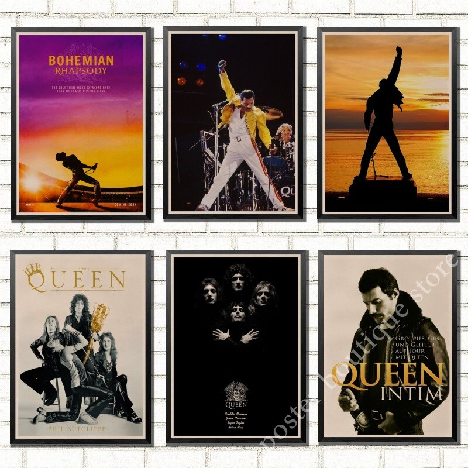

Queen
в переводе с англ.— «королева»

The show must go on // Шоу должно продолжаться
-
Queen II и Sheer Heart Attack (1973—1974)
- 13 июля 1973 года группа выпустила дебютный одноимённый альбом, в
который была включена песня трио
«Smile» «Doing All Right». Однако
ставку музыканты сделали на песню
«Keep Yourself Alive», выпустив её
дебютным синглом (1973).
-
A Night at the Opera и A Day at the Races (1975—1976)В 1975 году альбом A Night at the Opera произвёл фурор. Разные
источники указывают этот альбом в числе лучших альбомов современной
музыки. Альбом занял 230 строчку в списке
«500 величайших альбомов всех времён по версии журнала Rolling
Stone». В Англии альбом стал четырежды платиновым.Самой известной песней
этого альбома является
«Bohemian Rhapsody» — длинная
шестиминутная композиция, соединившая в себе элементы рок- и
поп-музыки, оперы и отдельные мотивы фольклора. Стандартной в те
годы считалась трёхминутная песня, но
«Queen» создали шестиминутную
песню и сумели отправить её в радиоэфир.
-
News of the World и Jazz (1977—1979)
В октябре 1977 года вышла пластинка News of the World, в которой
Queen впервые сделали шаг от сложных гармоний арт-рока в сторону
упрощения и сдержанности звучания. Этот диск принёс группе три
суперхита:
«We Will Rock You», «Spread Your Wings» и «We Are the
Champions», но в остальном был не столь успешен, дошёл до четвёртой строчки в
Великобритании и третьей в США. Группа снова выступила с концертами
в Швеции и провела турне по Северной Америке и Европе.
-
The Game, Flash Gordon и Hot Space (1980—1982)С 1980 года начинается новый период в творчестве Queen. Группа
постепенно отошла от глэм-рока, а Меркьюри расстался со своим
прежним сценическим образом: постригся, отрастил усы. Queen на
концерте 12 апреля 1982 в Драммен, Норвегия, во время
Hot Space Tour
В 1980 году вышел альбом The Game.
«Play the Game», титульная песня
альбома, сопровождалась несколько необычным клипом: на заднем плане
в нём горит огонь, в котором впоследствии растворяются музыканты —
это одно из первых применений компьютерной графики. Особенным
успехом пользовалась песня Дикона
«Another One Bites the Dust»,
запоминающаяся своей басовой партией. Эта вещь относится к
несвойственному для «Queen» стилю,
который можно описать как диско-фанк. Меркьюри очень любил эту
песню, и весь альбом разрабатывался с учётом её характера.
-
The Works и A Kind of Magic (1983—1986)В начале 1983 года группа ненадолго приостановила работу — все
музыканты работали над сольными проектами. Меркьюри и Тейлор
записывали свои сольные альбомы, Mr. Bad Guy и Strange Frontier,
соответственно. Мэй выпустил мини-альбом Star Fleet Project в
сотрудничестве с Эдди Ван Халеном. В 1984 году альбом The Works
занял второе место в хит-парадах Великобритании. Песня «Radio Ga Ga»
возглавила хит-парады в 19 странах мира. Бурю эмоций вызвал
видеоклип, снятый на песню
«I Want to Break Free». Основная
часть сюжета клипа разворачивается в декорациях популярнейшего
британского телесериала «Coronation Street», а музыканты группы
облачены в наряды женских персонажей сериала. Скандальность клипа,
впрочем, не помешала самой песне стать официальным гимном
Африканского Национального Конгресса. Группа выступила на фестивале
«Golden Rose» в Монтрё, а запись
выступления вошла в DVD
«Greatest Video Hits II».
"We are the champions // Мы — чемпионы "We are the champions, my
friends And we'll keep on fighting...till the end"
Эта песня вышла в 1977 году и с тех пор стала внегласным гимном всех
спортивных матчей. При этом играть саму песню не обязательно —
болельщики сами ее споют."
-- Интересный факт о самом популярном спортивном гимне.